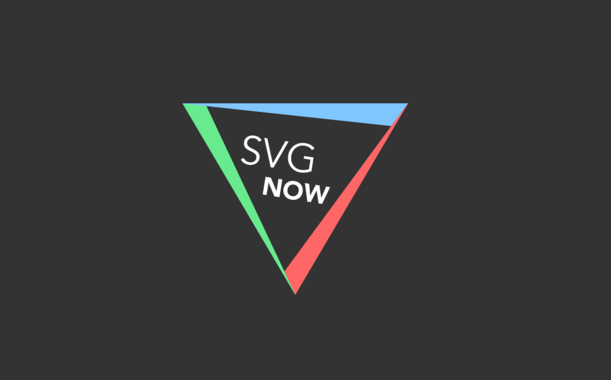
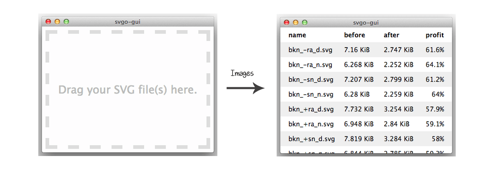

One of the steps you need to do when working with SVG is optimizing the SVG code after exporting it from the editor and before embedding in on your web page. For that, several standalone optimization tools exits. The two tools I usually mention in my articles and talks are Peter Collingridge's online editor, and SVGO. In this article, I'm going to introduce you to a new SVGO Tool that provides us with everything Peter's tool does, and a bit more.
This is not to say that peter’s tool is no longer useful—it certainly is. But if you use SVGO, then you know how convenient it is with all the available tools it comes with.
What is SVGO?
For those of you who are not familiar with SVGO: it is a node-js based SVG optimization tool. (SVGO is an abbreviation for SVG Optimization). It comes with a set of tools and plugins that make it a great tool that you can integrate into almost any kind of workflow. (We’ll go over these tools shortly.)
However, SVGO has one disadvantage: it can easily break your SVG—especially if it is animated or scripted, the document structure will change and eventually break any animations or scripting applied.
Even with the many SVGO tools and plugins available, unfortunately, we had no way to preview the result of applying SVGO optimizations to an SVG, to tell whether they will break it or not.. until now.
Introducing SVGOMG
Last month, when I wrote the SVG performance article for Perf Calendar, Google’s Jake Archibald tech-reviewed the article. And while discussing the code optimization section, I mentioned how SVGO lacks a GUI that allows us to preview the result of running the optimizations on our SVGs, and how it should be used with caution because of that.
A week or two later, Jake made the SVGOMG GUI—an interface that allows you to optimize SVGs by selecting your optimizations, and getting a live preview of how your SVG looks with these optimizations applied.
If you’ve used Peter’s tool before, you can expect the same from SVGOMG, and more.
You can upload an SVG file, paste SVG code in, or load the default demo SVG—if you’re just trying the app out. A set of options will then be revealed on the right side of the screen (see screenshot above). These options represent the optimizations built into SVGO. The SVGO optimizations are plugins that you can enable and disable as needed, and SVGOMG offers you a visual way of doing so.
The live preview section will update as you choose your optimizations, allowing you to detect and disable any optimizations that would break your SVG.
In the top right corner, you can see the current file size and the optimization percentage. You also have an option to show the original SVG—which will also display the original file size, to compare your it to your optimized version.
SVGOMG is an online tool. But if you know Jake then you’ll probably expect it to also work offline, considering that he might just be the biggest proponent of ServiceWorker and offline-first out there. He has written about it a lot on his blog. Thus—expectedly—the GUI works offline too in any browser that’s got ServiceWorker. (For an overview of the state of ServiceWorker, refer to this browser compatibility page.) Once you’ve opened the app (try it in Chrome, for example), you will get a notification a couple of seconds later telling you that the GUI is ready to work offline.
Very useful, isn’t it?
Other SVGO Tools
There are quite a few SVGO plugins available that can be used in a variety of ways, depending on your preferred workflow:
Adobe Illustrator Plugin
A GUI allowing you to select the optimizations you want to apply also exists in another SVGO tool called SVG NOW.

SVG NOW is an Illustrator plugin that brings SVGO’s optimizations into Illustrator. It is an alternative SVG exporter for AI, aimed at optimizing SVG files by post-processing the generated SVG code using SVGO. This is useful for sure, but SVG NOW does not show you a live preview of how the SVG is affected by the optimizations you choose.
Inkscape Plugin
Similar to SVG NOW, SVGO-Inkscape is an Inkscape plugin that allows you to remove a lot of redundant and useless information such as editor metadata, comments, hidden elements, default or non-optimal values and other stuff generated by Inkscape and that can be safely removed or converted without affecting SVG rendering result.
Sketch Plugin
SVGO Compressor is the Sketch version of the SVGO plugin, which compresses SVG assets using SVGO, right when you export them. As with other SVGO tools, there’s no way of telling how the exported SVG will be affected by the optimizations applied.
From my personal experience I’ve found that SVGs exported using Sketch were more likely to break when optimized with SVGO, because of how Sketch exports certain SVG shapes using clip paths and masks. So it’s useful to remember that you might need to re-export and re-optimize the SVG another way if and when this happens.
Note that the plugin requires Sketch 3.8, and so it won’t work with older versions of the application.
Drag'n'Drop GUI
Another kind of GUI for SVGO exists — called SVGO GUI — that allows you to drag-and-drop your SVGs and then optimizes those SVG on-the-fly, replacing your original ones with the optimized versions.

This GUI is useful for quick bulk optimizations, but it risky considering that 1) you cannot preview the optimized SVG 2) your original SVGs are instantly replaced by the optimized versions, which means that your SVGs might break, and the broken ones will replace the original ones. If you’re going to use this GUI, make sure you have a backup before you optmize.
Grunt and Gulp Plugins
SVGO is probably mostly known for its Grunt plugin, and its sister the Gulp plugin. Both of these plugins allow you to enable and disable SVGO optimizations as needed.
For example, a default SVGO optimization will remove the viewBox attribute from your SVG. This is something you should completely avoid, because, without the viewBox attribute, the SVG cannot be made responsive. (For more information about the viewBox attribute, refer to my tutorial here.)
When you set up SVGO in Grunt, for example, you can disable any plugins you want. For example, to disable removing the viewBox, add removeViewBox: false to the Plugins object in your configuration file.
// Source: https://github.com/sindresorhus/grunt-svgmin
grunt.initConfig({
svgmin: {
options: {
plugins: [
{
removeViewBox: false
}, {
removeUselessStrokeAndFill: false
}
]
},
dist: {
files: {
'dist/unicorn.svg': 'app/unicorn.svg'
}
}
}
});
You can refer to the plugin’s Github repo for more information.
OS X Folder Action
SVGO also comes with an OS X folder action that you can attach to any folder, and then have your SVGs optimized on-the-fly as soon as you place them in that folder. Again, optmized versions will replace the original ones, so be careful.
Final Words
No matter what your workflow is, SVGO can probably fit into it, one way or another.
I’m sure other SVG optimization tools exits, but with all the options SVGO comes with, if you ask me, this is the tool I would recommend.
Optimize those SVGs, build something beautiful, and share it with the world.
Thank you for reading.